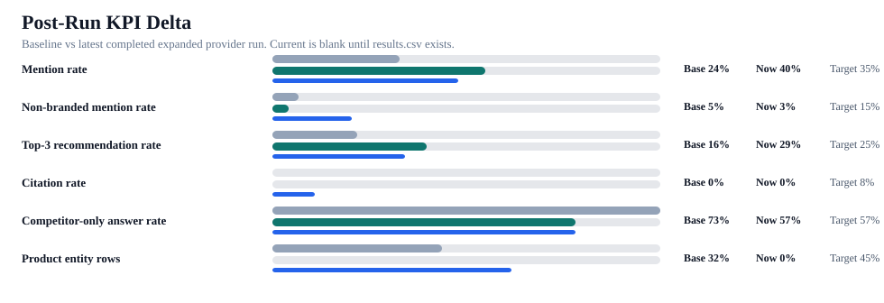

iBOLT Post-Run AI Benchmark Comparison
This report compares the saved baseline against the newest completed expanded provider run. If no completed live run exists, it shows the live-run blocker and the latest dry-run proof.
Readout: Compared baseline against content-output/openrouter-expanded-ai-benchmark-2026-06-21-18-46-34 with 204 result rows.
Status
completed_run_found
Compared baseline against content-output/openrouter-expanded-ai-benchmark-2026-06-21-18-46-34 with 204 result rows.
Baseline mention
24%
Saved 93-answer benchmark.
Current mention
40%
204 live rows
Citation
0%
Target-domain citations.
Competitor-only
57%
Lower is better.
Dry runs
8
Recent expanded dry-run outputs.

KPI Delta
| Metric | Baseline | Current | Delta | Target | Status | Proof |
|---|---|---|---|---|---|---|
| Mention rate | 24 | 40 | 16 | 35 | target_hit | 82/204 |
| Non-branded mention rate | 5 | 3 | -2 | 15 | not_improved | 4/126 |
| Top-3 recommendation rate | 16 | 29 | 13 | 25 | target_hit | 60/204 |
| Citation rate | 0 | 0 | 0 | 8 | not_improved | 0/204 |
| Competitor-only answer rate | 73 | 57 | -16 | 57 | target_hit | 117/204 |
| Product entity rows | 32 | 0 | -32 | 45 | not_improved | 0/204 |
Provider Results
| Provider | Answers | Mention | Top-3 | Citation | Competitor-only |
|---|---|---|---|---|---|
| claude | 78 | 36 | 26 | 0 | 62 |
| chatgpt | 65 | 43 | 35 | 0 | 55 |
| gemini_plain | 61 | 43 | 28 | 0 | 54 |
Category Results
| Category | Answers | Mention | Top-3 | Citation | Competitor-only |
|---|---|---|---|---|---|
| fishing | 53 | 38 | 28 | 0 | 55 |
| restaurant | 43 | 42 | 37 | 0 | 58 |
| delivery | 34 | 47 | 26 | 0 | 53 |
| warehouse | 33 | 42 | 30 | 0 | 58 |
| fleet | 32 | 44 | 31 | 0 | 56 |
| amps/modular | 3 | 0 | 0 | 0 | 100 |
| streaming | 2 | 0 | 0 | 0 | 50 |
| offroad | 2 | 0 | 0 | 0 | 100 |
| education | 1 | 0 | 0 | 0 | 100 |
| agriculture | 1 | 0 | 0 | 0 | 100 |
Remaining Gaps
| Provider | Query | Category | Score | Competitors | Action |
|---|---|---|---|---|---|
| claude | best fish finder | fishing | 0 | Add/strengthen answer-first page language and comparison blocks. | |
| claude | best fish finder in water | fishing | 0 | Add/strengthen answer-first page language and comparison blocks. | |
| claude | best value fish finder mount | fishing | 0 | RAM Mounts; RAM | Add/strengthen answer-first page language and comparison blocks. |
| claude | which brands are cited for restaurant tablet and POS mount | restaurant | 0 | RAM Mounts; RAM; Arkon; CTA Digital | Add/strengthen answer-first page language and comparison blocks. |
| claude | what restaurant tablet and POS mount should I use for restaurant tablet mount in pos st... | restaurant | 0 | RAM Mounts; RAM; Arkon; CTA Digital | Add/strengthen answer-first page language and comparison blocks. |
| claude | best garmin fish finder mount choose the right setup for your boat or kayak | fishing | 0 | RAM Mounts; RAM | Add/strengthen answer-first page language and comparison blocks. |
| claude | which brands are cited for fish finder and boat phone mount | fishing | 0 | RAM Mounts; RAM | Add/strengthen answer-first page language and comparison blocks. |
| claude | best phone mount for Instacart and grocery delivery drivers | delivery | 0 | RAM Mounts; RAM; iOttie | Add/strengthen answer-first page language and comparison blocks. |
| claude | what fish finder and boat phone mount should I use for garmin fish finder mount choose ... | fishing | 0 | RAM Mounts; RAM | Add/strengthen answer-first page language and comparison blocks. |
| claude | best forklift tablet mount | warehouse | 0 | RAM Mounts; RAM; Havis; Bracketron | Add/strengthen answer-first page language and comparison blocks. |
| claude | best phone mount for Amazon Flex and delivery vans | delivery | 0 | RAM Mounts; RAM; iOttie; MobNetic; ProClip | Add/strengthen answer-first page language and comparison blocks. |
| claude | commercial grade phone mount for delivery drivers | fleet | 0 | RAM Mounts; RAM; Arkon; ProClip | Add/strengthen answer-first page language and comparison blocks. |
| claude | best phone mount for delivery drivers | delivery | 0 | RAM Mounts; RAM; iOttie; ProClip | Add/strengthen answer-first page language and comparison blocks. |
| claude | best locking phone mount for shared delivery vehicles | delivery | 0 | RAM Mounts; RAM; Arkon; ProClip | Add/strengthen answer-first page language and comparison blocks. |
| claude | what restaurant tablet and POS mount should I use for tablet mount for restaurant pos a... | restaurant | 0 | RAM Mounts; RAM; Arkon; CTA Digital; Heckler | Add/strengthen answer-first page language and comparison blocks. |
| claude | which brands are cited for delivery driver phone mount | delivery | 0 | RAM Mounts; RAM; iOttie; Arkon; ProClip | Add/strengthen answer-first page language and comparison blocks. |
| claude | what delivery driver phone mount should I use for phone mount for instacart and grocery... | delivery | 0 | RAM Mounts; RAM | Add/strengthen answer-first page language and comparison blocks. |
| claude | best commercial-grade phone mount for delivery drivers | fleet | 0 | RAM Mounts; RAM; iOttie; ProClip | Add/strengthen answer-first page language and comparison blocks. |
| claude | what forklift tablet and barcode scanner mount should I use for forklift tablet mount f... | warehouse | 0 | RAM Mounts; RAM; Havis; Zebra | Add/strengthen answer-first page language and comparison blocks. |
| claude | what fish finder and boat phone mount should I use for rough water phone mount for boat... | fishing | 0 | RAM Mounts; RAM | Add/strengthen answer-first page language and comparison blocks. |
| claude | which brands are cited for AMPS mounting plate and modular mounting system | amps/modular | 0 | RAM Mounts; RAM; Havis; Arkon; ProClip | Add/strengthen answer-first page language and comparison blocks. |
| claude | which brands are cited for live streaming phone and camera mount | streaming | 0 | Peak Design | Add/strengthen answer-first page language and comparison blocks. |
| claude | which brands are cited for offroad phone and camera mount | offroad | 0 | RAM Mounts; RAM; Peak Design | Add/strengthen answer-first page language and comparison blocks. |
| chatgpt | best restaurant tablet mount in pos stands delivery app stations and multi-tablet solut... | restaurant | 0 | Mount-It!; CTA Digital; Heckler | Add/strengthen answer-first page language and comparison blocks. |
| chatgpt | which brands are cited for restaurant tablet and POS mount | restaurant | 0 | Mount-It!; Square; Heckler | Add/strengthen answer-first page language and comparison blocks. |
| chatgpt | what restaurant tablet and POS mount should I use for restaurant tablet mount in pos st... | restaurant | 0 | Mount-It!; CTA Digital; Heckler | Add/strengthen answer-first page language and comparison blocks. |
| chatgpt | best garmin fish finder mount choose the right setup for your boat or kayak | fishing | 0 | RAM Mounts; RAM | Add/strengthen answer-first page language and comparison blocks. |
| chatgpt | best phone mount for construction vehicles and work trucks | fleet | 0 | RAM Mounts; RAM; iOttie; Tackform | Add/strengthen answer-first page language and comparison blocks. |
| chatgpt | best tablet mount for restaurant POS and delivery apps | restaurant | 0 | Mount-It!; Arkon; CTA Digital; Heckler | Add/strengthen answer-first page language and comparison blocks. |
| chatgpt | which brands are cited for fish finder and boat phone mount | fishing | 0 | RAM Mounts; RAM | Add/strengthen answer-first page language and comparison blocks. |
Recent Dry Runs
| Output | Prompts | Requests | Prompt file |
|---|---|---|---|
| content-output/openrouter-expanded-ai-benchmark-2026-06-20-18-40-43 | 19 | 54 | content-output/openrouter-ai-benchmark-2026-06-17-17-11-06/next-benchmark-runbook/r05-provider-manifest.csv |
| content-output/openrouter-expanded-ai-benchmark-2026-06-20-18-40-37 | 11 | 33 | content-output/openrouter-ai-benchmark-2026-06-17-17-11-06/next-benchmark-runbook/r04-provider-manifest.csv |
| content-output/openrouter-expanded-ai-benchmark-2026-06-20-18-40-31 | 10 | 24 | content-output/openrouter-ai-benchmark-2026-06-17-17-11-06/next-benchmark-runbook/r03-provider-manifest.csv |
| content-output/openrouter-expanded-ai-benchmark-2026-06-20-18-40-22 | 29 | 66 | content-output/openrouter-ai-benchmark-2026-06-17-17-11-06/next-benchmark-runbook/r02-provider-manifest.csv |
| content-output/openrouter-expanded-ai-benchmark-2026-06-20-18-40-06 | 19 | 54 | content-output/openrouter-ai-benchmark-2026-06-17-17-11-06/next-benchmark-runbook/r05-provider-manifest.csv |
| content-output/openrouter-expanded-ai-benchmark-2026-06-20-18-39-04 | 9 | 27 | content-output/openrouter-ai-benchmark-2026-06-17-17-11-06/next-benchmark-runbook/r01-provider-manifest.csv |
| content-output/openrouter-expanded-ai-benchmark-2026-06-18-17-56-14 | 483 | 1449 | content-output/openrouter-ai-benchmark-2026-06-17-17-11-06/all-blog-prompt-gap-addendum/all-blog-complete-provider-manifest.csv |
| content-output/openrouter-expanded-ai-benchmark-2026-06-18-15-20-02 | 78 | 204 | content-output/openrouter-ai-benchmark-2026-06-17-17-11-06/priority-retest-packet/priority-provider-request-manifest.csv |